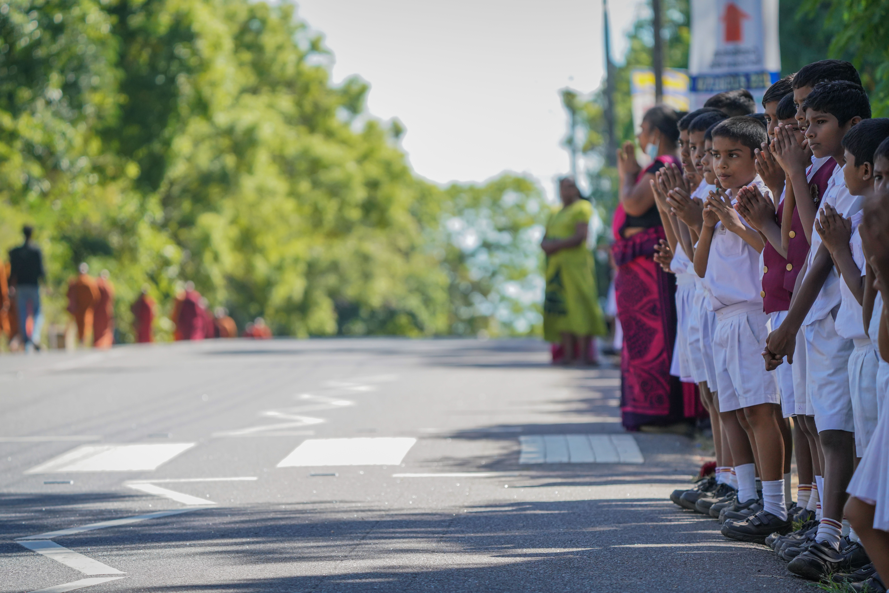
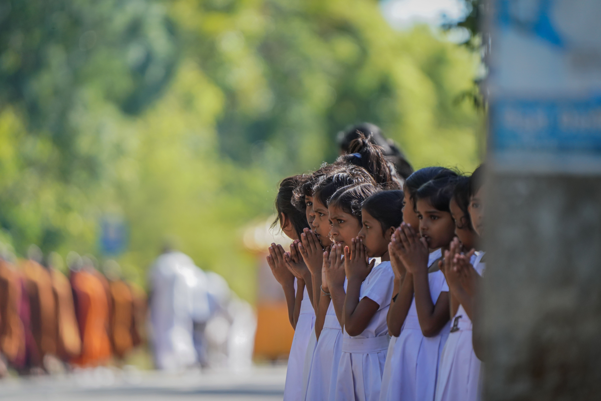

BrightPath
Learn · Grow · Succeed
Take Action →
BrightPath
Learn · Grow · Succeed
Take Action →
A few moments that stuck with us
These are some of the real scenes that got us thinking about this SDG in the first place. Click any photo for the full story behind it.
Photo Highlights

Respect, Passed Down
Showing Up Together The Digital Half of the Gap
The Digital Half of the Gap
 The Best Study Spot Isn't a Desk
The Best Study Spot Isn't a Desk